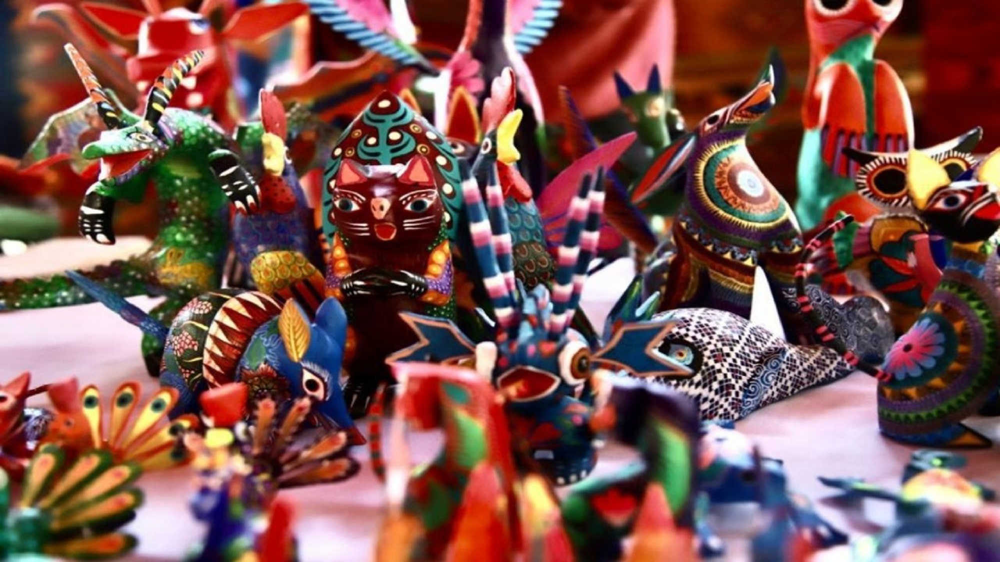

Existen diversos productos artesanales entre los que se encuentran fajas, cobijas, cojines, manteles, tapetes, chalecos, gabanes, morrales y quexquémitl de lana. En algunos lugares se especializan en la elaboración de ciertos productos, así, en San Felipe del Progreso y Villa Victoria elaboran cepillos y escobas de zacatón; en Temascalcingo producen ollas, cazuelas y macetas de barro rojo; en Atlacomulco hacen sombreros de paja.
